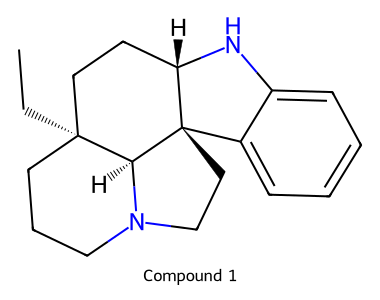
C19H26N2 · source_drawing_transcription
depicted_configuration_transcribed
CC[C@]12CCCN3CC[C@@]4(c5ccccc5N[C@H]4CC1)[C@@H]3210.1021/acs.joc.6c00699 · paper-0ae671ac9a8bbe22
机器转录候选数据；尚未经独立化学专家审定。覆盖本文从 23 开始的路线，11 个天然产物与终止于 40 的形式全合成分支。未分离中间体的推定结构另行标记。
38 个分子 · 27 个反应事件 · 35 个操作组 · 12 条目标路径
完整 JSON · 分子 CSV · 步骤 CSV · 路线/SMILES 序列 · SDF · 校验结果
O=C(CCBr)N[C@H]1[C@H]2C=CC[C@]1(c1ccccc1[N+](=O)[O-])C(=O)CC2>>O=C(CCBr)N[C@H]1[C@H]2C=CC[C@]13C(=Nc1ccccc13)CC2O=C(CCBr)N[C@H]1[C@H]2C=CC[C@]13C(=Nc1ccccc13)CC2>>O=C(CCBr)N[C@H]1[C@H]2C=CC[C@@]13c1ccccc1N[C@H]3CC2O=C(CCBr)N[C@H]1[C@H]2C=CC[C@@]13c1ccccc1N[C@H]3CC2>>O=C(CCBr)N[C@H]1[C@H]2C=CC[C@@]13c1ccccc1N(C(=O)OCc1ccccc1)[C@H]3CC2O=C(CCBr)N[C@H]1[C@H]2C=CC[C@@]13c1ccccc1N(C(=O)OCc1ccccc1)[C@H]3CC2>>O=CC[C@]12c3ccccc3N(C(=O)OCc3ccccc3)[C@H]1CC[C@H](C=O)[C@@H]2NC(=O)CCBrO=CC[C@]12c3ccccc3N(C(=O)OCc3ccccc3)[C@H]1CC[C@H](C=O)[C@@H]2NC(=O)CCBr>>O=C[C@]12CCC(=O)N3[C@@H](O)C[C@@]4(c5ccccc5N(C(=O)OCc5ccccc5)[C@H]4CC1)[C@@H]32O=C[C@]12CCC(=O)N3[C@@H](O)C[C@@]4(c5ccccc5N(C(=O)OCc5ccccc5)[C@H]4CC1)[C@@H]32>>C=C[C@]12CCC(=O)N3C(O)C[C@@]4(c5ccccc5N(C(=O)OCc5ccccc5)[C@H]4CC1)[C@@H]32C=C[C@]12CCC(=O)N3C(O)C[C@@]4(c5ccccc5N(C(=O)OCc5ccccc5)[C@H]4CC1)[C@@H]32>>CC[C@]12CCC(=O)N3C(O)C[C@@]4(c5ccccc5N[C@H]4CC1)[C@@H]32CC[C@]12CCC(=O)N3C(O)C[C@@]4(c5ccccc5N[C@H]4CC1)[C@@H]32>>CC[C@]12CCCN3CC[C@@]4(c5ccccc5N[C@H]4CC1)[C@@H]32O=C(CCBr)N[C@H]1[C@H]2C=CC[C@]1(c1ccccc1[N+](=O)[O-])C(=O)CC2>>O=C(CCBr)N[C@H]1[C@H]2C=CC[C@]13C(=Nc1ccccc13)CC2O=C(CCBr)N[C@H]1[C@H]2C=CC[C@]13C(=Nc1ccccc13)CC2>>O=C(CCBr)N[C@H]1[C@H]2C=CC[C@@]13c1ccccc1N[C@H]3CC2O=C(CCBr)N[C@H]1[C@H]2C=CC[C@@]13c1ccccc1N[C@H]3CC2>>O=C(CCBr)N[C@H]1[C@H]2C=CC[C@@]13c1ccccc1N(C(=O)OCc1ccccc1)[C@H]3CC2O=C(CCBr)N[C@H]1[C@H]2C=CC[C@@]13c1ccccc1N(C(=O)OCc1ccccc1)[C@H]3CC2>>O=CC[C@]12c3ccccc3N(C(=O)OCc3ccccc3)[C@H]1CC[C@H](C=O)[C@@H]2NC(=O)CCBrO=CC[C@]12c3ccccc3N(C(=O)OCc3ccccc3)[C@H]1CC[C@H](C=O)[C@@H]2NC(=O)CCBr>>O=C[C@]12CCC(=O)N3[C@@H](O)C[C@@]4(c5ccccc5N(C(=O)OCc5ccccc5)[C@H]4CC1)[C@@H]32O=C[C@]12CCC(=O)N3[C@@H](O)C[C@@]4(c5ccccc5N(C(=O)OCc5ccccc5)[C@H]4CC1)[C@@H]32>>C=C[C@]12CCC(=O)N3C(O)C[C@@]4(c5ccccc5N(C(=O)OCc5ccccc5)[C@H]4CC1)[C@@H]32C=C[C@]12CCC(=O)N3C(O)C[C@@]4(c5ccccc5N(C(=O)OCc5ccccc5)[C@H]4CC1)[C@@H]32>>C=C[C@]12CCCN3CC[C@@]4(c5ccccc5N(C)[C@H]4CC1)[C@@H]32C=C[C@]12CCCN3CC[C@@]4(c5ccccc5N(C)[C@H]4CC1)[C@@H]32>>CC[C@]12CCCN3CC[C@@]4(c5ccccc5N(C)[C@H]4CC1)[C@@H]32O=C(CCBr)N[C@H]1[C@H]2C=CC[C@]1(c1ccccc1[N+](=O)[O-])C(=O)CC2>>O=C(CCBr)N[C@H]1[C@H]2C=CC[C@]13C(=Nc1ccccc13)CC2O=C(CCBr)N[C@H]1[C@H]2C=CC[C@]13C(=Nc1ccccc13)CC2>>O=C(CCBr)N[C@H]1[C@H]2C=CC[C@@]13c1ccccc1N[C@H]3CC2O=C(CCBr)N[C@H]1[C@H]2C=CC[C@@]13c1ccccc1N[C@H]3CC2>>O=C(CCBr)N[C@H]1[C@H]2C=CC[C@@]13c1ccccc1N(C(=O)OCc1ccccc1)[C@H]3CC2O=C(CCBr)N[C@H]1[C@H]2C=CC[C@@]13c1ccccc1N(C(=O)OCc1ccccc1)[C@H]3CC2>>O=CC[C@]12c3ccccc3N(C(=O)OCc3ccccc3)[C@H]1CC[C@H](C=O)[C@@H]2NC(=O)CCBrO=CC[C@]12c3ccccc3N(C(=O)OCc3ccccc3)[C@H]1CC[C@H](C=O)[C@@H]2NC(=O)CCBr>>O=C[C@]12CCC(=O)N3[C@@H](O)C[C@@]4(c5ccccc5N(C(=O)OCc5ccccc5)[C@H]4CC1)[C@@H]32O=C[C@]12CCC(=O)N3[C@@H](O)C[C@@]4(c5ccccc5N(C(=O)OCc5ccccc5)[C@H]4CC1)[C@@H]32>>C=C[C@]12CCC(=O)N3C(O)C[C@@]4(c5ccccc5N(C(=O)OCc5ccccc5)[C@H]4CC1)[C@@H]32C=C[C@]12CCC(=O)N3C(O)C[C@@]4(c5ccccc5N(C(=O)OCc5ccccc5)[C@H]4CC1)[C@@H]32>>CC[C@]12CCC(=O)N3C(O)C[C@@]4(c5ccccc5N[C@H]4CC1)[C@@H]32CC[C@]12CCC(=O)N3C(O)C[C@@]4(c5ccccc5N[C@H]4CC1)[C@@H]32>>CC[C@]12CCCN3CC[C@@]4(c5ccccc5N[C@H]4CC1)[C@@H]32CC[C@]12CCCN3CC[C@@]4(c5ccccc5N[C@H]4CC1)[C@@H]32>>CC[C@]12CCCN3CC[C@@]4(c5ccccc5N(C(C)=O)[C@H]4CC1)[C@@H]32CC[C@]12CCCN3CC[C@@]4(c5ccccc5N(C(C)=O)[C@H]4CC1)[C@@H]32>>CC[C@]12CCCN3CC[C@@]4(c5cccc(O)c5N(C(C)=O)[C@H]4CC1)[C@@H]32O=C(CCBr)N[C@H]1[C@H]2C=CC[C@]1(c1ccccc1[N+](=O)[O-])C(=O)CC2>>O=C(CCBr)N[C@H]1[C@H]2C=CC[C@]13C(=Nc1ccccc13)CC2O=C(CCBr)N[C@H]1[C@H]2C=CC[C@]13C(=Nc1ccccc13)CC2>>O=C(CCBr)N[C@H]1[C@H]2C=CC[C@@]13c1ccccc1N[C@H]3CC2O=C(CCBr)N[C@H]1[C@H]2C=CC[C@@]13c1ccccc1N[C@H]3CC2>>O=C(CCBr)N[C@H]1[C@H]2C=CC[C@@]13c1ccccc1N(C(=O)OCc1ccccc1)[C@H]3CC2O=C(CCBr)N[C@H]1[C@H]2C=CC[C@@]13c1ccccc1N(C(=O)OCc1ccccc1)[C@H]3CC2>>O=CC[C@]12c3ccccc3N(C(=O)OCc3ccccc3)[C@H]1CC[C@H](C=O)[C@@H]2NC(=O)CCBrO=CC[C@]12c3ccccc3N(C(=O)OCc3ccccc3)[C@H]1CC[C@H](C=O)[C@@H]2NC(=O)CCBr>>O=C[C@]12CCC(=O)N3[C@@H](O)C[C@@]4(c5ccccc5N(C(=O)OCc5ccccc5)[C@H]4CC1)[C@@H]32O=C[C@]12CCC(=O)N3[C@@H](O)C[C@@]4(c5ccccc5N(C(=O)OCc5ccccc5)[C@H]4CC1)[C@@H]32>>C=C[C@]12CCC(=O)N3C(O)C[C@@]4(c5ccccc5N(C(=O)OCc5ccccc5)[C@H]4CC1)[C@@H]32C=C[C@]12CCC(=O)N3C(O)C[C@@]4(c5ccccc5N(C(=O)OCc5ccccc5)[C@H]4CC1)[C@@H]32>>CC[C@]12CCC(=O)N3C(O)C[C@@]4(c5ccccc5N[C@H]4CC1)[C@@H]32CC[C@]12CCC(=O)N3C(O)C[C@@]4(c5ccccc5N[C@H]4CC1)[C@@H]32>>CC[C@]12CCCN3CC[C@@]4(c5ccccc5N[C@H]4CC1)[C@@H]32CC[C@]12CCCN3CC[C@@]4(c5ccccc5N[C@H]4CC1)[C@@H]32>>CC[C@]12CCCN3CC[C@@]4(c5ccccc5N(C(C)=O)[C@H]4CC1)[C@@H]32CC[C@]12CCCN3CC[C@@]4(c5ccccc5N(C(C)=O)[C@H]4CC1)[C@@H]32>>CC[C@]12CCCN3CC[C@@]4(c5cccc(O)c5N(C(C)=O)[C@H]4CC1)[C@@H]32CC[C@]12CCCN3CC[C@@]4(c5cccc(O)c5N(C(C)=O)[C@H]4CC1)[C@@H]32>>CC[C@]12CCCN3CC[C@@]4(c5cccc(OC)c5N(C(C)=O)[C@H]4CC1)[C@@H]32O=C(CCBr)N[C@H]1[C@H]2C=CC[C@]1(c1ccccc1[N+](=O)[O-])C(=O)CC2>>O=C(CCBr)N[C@H]1[C@H]2C=CC[C@]13C(=Nc1ccccc13)CC2O=C(CCBr)N[C@H]1[C@H]2C=CC[C@]13C(=Nc1ccccc13)CC2>>O=C(CCBr)N[C@H]1[C@H]2C=CC[C@@]13c1ccccc1N[C@H]3CC2O=C(CCBr)N[C@H]1[C@H]2C=CC[C@@]13c1ccccc1N[C@H]3CC2>>O=C(CCBr)N[C@H]1[C@H]2C=CC[C@@]13c1ccccc1N(C(=O)OCc1ccccc1)[C@H]3CC2O=C(CCBr)N[C@H]1[C@H]2C=CC[C@@]13c1ccccc1N(C(=O)OCc1ccccc1)[C@H]3CC2>>O=CC[C@]12c3ccccc3N(C(=O)OCc3ccccc3)[C@H]1CC[C@H](C=O)[C@@H]2NC(=O)CCBrO=CC[C@]12c3ccccc3N(C(=O)OCc3ccccc3)[C@H]1CC[C@H](C=O)[C@@H]2NC(=O)CCBr>>O=C[C@]12CCC(=O)N3[C@@H](O)C[C@@]4(c5ccccc5N(C(=O)OCc5ccccc5)[C@H]4CC1)[C@@H]32O=C[C@]12CCC(=O)N3[C@@H](O)C[C@@]4(c5ccccc5N(C(=O)OCc5ccccc5)[C@H]4CC1)[C@@H]32>>C=C[C@]12CCC(=O)N3C(O)C[C@@]4(c5ccccc5N(C(=O)OCc5ccccc5)[C@H]4CC1)[C@@H]32C=C[C@]12CCC(=O)N3C(O)C[C@@]4(c5ccccc5N(C(=O)OCc5ccccc5)[C@H]4CC1)[C@@H]32>>CC[C@]12CCC(=O)N3C(O)C[C@@]4(c5ccccc5N[C@H]4CC1)[C@@H]32CC[C@]12CCC(=O)N3C(O)C[C@@]4(c5ccccc5N[C@H]4CC1)[C@@H]32>>CC[C@]12CCCN3CC[C@@]4(c5ccccc5N[C@H]4CC1)[C@@H]32CC[C@]12CCCN3CC[C@@]4(c5ccccc5N[C@H]4CC1)[C@@H]32>>CC[C@]12CCCN3CC[C@]4(C(=Nc5ccccc54)CC1)[C@@H]32O=C(CCBr)N[C@H]1[C@H]2C=CC[C@]1(c1ccccc1[N+](=O)[O-])C(=O)CC2>>O=C(CCBr)N[C@H]1[C@H]2C=CC[C@]13C(=Nc1ccccc13)CC2O=C(CCBr)N[C@H]1[C@H]2C=CC[C@]13C(=Nc1ccccc13)CC2>>O=C(CCBr)N[C@H]1[C@H]2C=CC[C@@]13c1ccccc1N[C@H]3CC2O=C(CCBr)N[C@H]1[C@H]2C=CC[C@@]13c1ccccc1N[C@H]3CC2>>O=C(CCBr)N[C@H]1[C@H]2C=CC[C@@]13c1ccccc1N(C(=O)OCc1ccccc1)[C@H]3CC2O=C(CCBr)N[C@H]1[C@H]2C=CC[C@@]13c1ccccc1N(C(=O)OCc1ccccc1)[C@H]3CC2>>O=CC[C@]12c3ccccc3N(C(=O)OCc3ccccc3)[C@H]1CC[C@H](C=O)[C@@H]2NC(=O)CCBrO=CC[C@]12c3ccccc3N(C(=O)OCc3ccccc3)[C@H]1CC[C@H](C=O)[C@@H]2NC(=O)CCBr>>O=C[C@]12CCC(=O)N3[C@@H](O)C[C@@]4(c5ccccc5N(C(=O)OCc5ccccc5)[C@H]4CC1)[C@@H]32O=C[C@]12CCC(=O)N3[C@@H](O)C[C@@]4(c5ccccc5N(C(=O)OCc5ccccc5)[C@H]4CC1)[C@@H]32>>C=C[C@]12CCC(=O)N3C(O)C[C@@]4(c5ccccc5N(C(=O)OCc5ccccc5)[C@H]4CC1)[C@@H]32C=C[C@]12CCC(=O)N3C(O)C[C@@]4(c5ccccc5N(C(=O)OCc5ccccc5)[C@H]4CC1)[C@@H]32>>CC[C@]12CCC(=O)N3C(O)C[C@@]4(c5ccccc5N[C@H]4CC1)[C@@H]32CC[C@]12CCC(=O)N3C(O)C[C@@]4(c5ccccc5N[C@H]4CC1)[C@@H]32>>CC[C@]12CCCN3CC[C@@]4(c5ccccc5N[C@H]4CC1)[C@@H]32CC[C@]12CCCN3CC[C@@]4(c5ccccc5N[C@H]4CC1)[C@@H]32>>CC[C@]12CCCN3CC[C@]4(C(=Nc5ccccc54)CC1)[C@@H]32CC[C@]12CCCN3CC[C@]4(C(=Nc5ccccc54)CC1)[C@@H]32>>CC[C@]12CCCN(CCc3c([nH]c4ccccc34)CC1)C2O=C(CCBr)N[C@H]1[C@H]2C=CC[C@]1(c1ccccc1[N+](=O)[O-])C(=O)CC2>>O=C(CCBr)N[C@H]1[C@H]2C=CC[C@]13C(=Nc1ccccc13)CC2O=C(CCBr)N[C@H]1[C@H]2C=CC[C@]13C(=Nc1ccccc13)CC2>>O=C(CCBr)N[C@H]1[C@H]2C=CC[C@@]13c1ccccc1N[C@H]3CC2O=C(CCBr)N[C@H]1[C@H]2C=CC[C@@]13c1ccccc1N[C@H]3CC2>>O=C(CCBr)N[C@H]1[C@H]2C=CC[C@@]13c1ccccc1N(C(=O)OCc1ccccc1)[C@H]3CC2O=C(CCBr)N[C@H]1[C@H]2C=CC[C@@]13c1ccccc1N(C(=O)OCc1ccccc1)[C@H]3CC2>>O=CC[C@]12c3ccccc3N(C(=O)OCc3ccccc3)[C@H]1CC[C@H](C=O)[C@@H]2NC(=O)CCBrO=CC[C@]12c3ccccc3N(C(=O)OCc3ccccc3)[C@H]1CC[C@H](C=O)[C@@H]2NC(=O)CCBr>>O=C[C@]12CCC(=O)N3[C@@H](O)C[C@@]4(c5ccccc5N(C(=O)OCc5ccccc5)[C@H]4CC1)[C@@H]32O=C[C@]12CCC(=O)N3[C@@H](O)C[C@@]4(c5ccccc5N(C(=O)OCc5ccccc5)[C@H]4CC1)[C@@H]32>>C=C[C@]12CCC(=O)N3C(O)C[C@@]4(c5ccccc5N(C(=O)OCc5ccccc5)[C@H]4CC1)[C@@H]32C=C[C@]12CCC(=O)N3C(O)C[C@@]4(c5ccccc5N(C(=O)OCc5ccccc5)[C@H]4CC1)[C@@H]32>>CC[C@]12CCC(=O)N3C(O)C[C@@]4(c5ccccc5N[C@H]4CC1)[C@@H]32CC[C@]12CCC(=O)N3C(O)C[C@@]4(c5ccccc5N[C@H]4CC1)[C@@H]32>>CC[C@]12CCCN3CC[C@@]4(c5ccccc5N[C@H]4CC1)[C@@H]32CC[C@]12CCCN3CC[C@@]4(c5ccccc5N[C@H]4CC1)[C@@H]32>>CC[C@]12CCCN3CC[C@]4(C(=Nc5ccccc54)CC1)[C@@H]32CC[C@]12CCCN3CC[C@]4(C(=Nc5ccccc54)CC1)[C@@H]32>>CC[C@]12CCCN3CC[C@]4(C(=C(C(=O)OC)C1)Nc1ccccc14)[C@@H]32.CC[C@@]12CC=C3N(C(=O)OC)c4ccccc4[C@@]34CCN(CCC1)[C@@H]24O=C(CCBr)N[C@H]1[C@H]2C=CC[C@]1(c1ccccc1[N+](=O)[O-])C(=O)CC2>>O=C(CCBr)N[C@H]1[C@H]2C=CC[C@]13C(=Nc1ccccc13)CC2O=C(CCBr)N[C@H]1[C@H]2C=CC[C@]13C(=Nc1ccccc13)CC2>>O=C(CCBr)N[C@H]1[C@H]2C=CC[C@@]13c1ccccc1N[C@H]3CC2O=C(CCBr)N[C@H]1[C@H]2C=CC[C@@]13c1ccccc1N[C@H]3CC2>>O=C(CCBr)N[C@H]1[C@H]2C=CC[C@@]13c1ccccc1N(C(=O)OCc1ccccc1)[C@H]3CC2O=C(CCBr)N[C@H]1[C@H]2C=CC[C@@]13c1ccccc1N(C(=O)OCc1ccccc1)[C@H]3CC2>>O=CC[C@]12c3ccccc3N(C(=O)OCc3ccccc3)[C@H]1CC[C@H](C=O)[C@@H]2NC(=O)CCBrO=CC[C@]12c3ccccc3N(C(=O)OCc3ccccc3)[C@H]1CC[C@H](C=O)[C@@H]2NC(=O)CCBr>>O=C[C@]12CCC(=O)N3[C@@H](O)C[C@@]4(c5ccccc5N(C(=O)OCc5ccccc5)[C@H]4CC1)[C@@H]32O=C[C@]12CCC(=O)N3[C@@H](O)C[C@@]4(c5ccccc5N(C(=O)OCc5ccccc5)[C@H]4CC1)[C@@H]32>>CO/C=C/[C@]12CCC(=O)N3C(O)C[C@@]4(c5ccccc5N(C(=O)OCc5ccccc5)[C@H]4CC1)[C@@H]32CO/C=C/[C@]12CCC(=O)N3C(O)C[C@@]4(c5ccccc5N(C(=O)OCc5ccccc5)[C@H]4CC1)[C@@H]32>>O=CC[C@]12CCC(=O)N3C(O)C[C@@]4(c5ccccc5N(C(=O)OCc5ccccc5)[C@H]4CC1)[C@@H]32O=CC[C@]12CCC(=O)N3C(O)C[C@@]4(c5ccccc5N(C(=O)OCc5ccccc5)[C@H]4CC1)[C@@H]32>>O=C(OCc1ccccc1)N1c2ccccc2[C@@]23CCN4CCC[C@@](CCO)(CC[C@H]12)[C@H]43O=C(OCc1ccccc1)N1c2ccccc2[C@@]23CCN4CCC[C@@](CCO)(CC[C@H]12)[C@H]43>>OCC[C@]12CCCN3CC[C@@]4(c5ccccc5N[C@H]4CC1)[C@@H]32O=C(CCBr)N[C@H]1[C@H]2C=CC[C@]1(c1ccccc1[N+](=O)[O-])C(=O)CC2>>O=C(CCBr)N[C@H]1[C@H]2C=CC[C@]13C(=Nc1ccccc13)CC2O=C(CCBr)N[C@H]1[C@H]2C=CC[C@]13C(=Nc1ccccc13)CC2>>O=C(CCBr)N[C@H]1[C@H]2C=CC[C@@]13c1ccccc1N[C@H]3CC2O=C(CCBr)N[C@H]1[C@H]2C=CC[C@@]13c1ccccc1N[C@H]3CC2>>O=C(CCBr)N[C@H]1[C@H]2C=CC[C@@]13c1ccccc1N(C(=O)OCc1ccccc1)[C@H]3CC2O=C(CCBr)N[C@H]1[C@H]2C=CC[C@@]13c1ccccc1N(C(=O)OCc1ccccc1)[C@H]3CC2>>O=CC[C@]12c3ccccc3N(C(=O)OCc3ccccc3)[C@H]1CC[C@H](C=O)[C@@H]2NC(=O)CCBrO=CC[C@]12c3ccccc3N(C(=O)OCc3ccccc3)[C@H]1CC[C@H](C=O)[C@@H]2NC(=O)CCBr>>O=C[C@]12CCC(=O)N3[C@@H](O)C[C@@]4(c5ccccc5N(C(=O)OCc5ccccc5)[C@H]4CC1)[C@@H]32O=C[C@]12CCC(=O)N3[C@@H](O)C[C@@]4(c5ccccc5N(C(=O)OCc5ccccc5)[C@H]4CC1)[C@@H]32>>CO/C=C/[C@]12CCC(=O)N3C(O)C[C@@]4(c5ccccc5N(C(=O)OCc5ccccc5)[C@H]4CC1)[C@@H]32CO/C=C/[C@]12CCC(=O)N3C(O)C[C@@]4(c5ccccc5N(C(=O)OCc5ccccc5)[C@H]4CC1)[C@@H]32>>O=CC[C@]12CCC(=O)N3C(O)C[C@@]4(c5ccccc5N(C(=O)OCc5ccccc5)[C@H]4CC1)[C@@H]32O=CC[C@]12CCC(=O)N3C(O)C[C@@]4(c5ccccc5N(C(=O)OCc5ccccc5)[C@H]4CC1)[C@@H]32>>O=C(OCc1ccccc1)N1c2ccccc2[C@@]23CCN4CCC[C@@](CCO)(CC[C@H]12)[C@H]43O=C(OCc1ccccc1)N1c2ccccc2[C@@]23CCN4CCC[C@@](CCO)(CC[C@H]12)[C@H]43>>OCC[C@]12CCCN3CC[C@@]4(c5ccccc5N[C@H]4CC1)[C@@H]32OCC[C@]12CCCN3CC[C@@]4(c5ccccc5N[C@H]4CC1)[C@@H]32>>CC(=O)N1c2ccccc2[C@@]23CCN4CCC[C@@](CCO)(CC[C@H]12)[C@H]43CC(=O)N1c2ccccc2[C@@]23CCN4CCC[C@@](CCO)(CC[C@H]12)[C@H]43>>CC(=O)N1c2ccccc2[C@@]23CCN4CCC[C@@](CC=O)(CC[C@H]12)[C@H]43CC(=O)N1c2ccccc2[C@@]23CCN4CCC[C@@](CC=O)(CC[C@H]12)[C@H]43>>COC(=O)C[C@]12CCCN3CC[C@@]4(c5ccccc5N(C(C)=O)[C@H]4CC1)[C@@H]32O=C(CCBr)N[C@H]1[C@H]2C=CC[C@]1(c1ccccc1[N+](=O)[O-])C(=O)CC2>>O=C(CCBr)N[C@H]1[C@H]2C=CC[C@]13C(=Nc1ccccc13)CC2O=C(CCBr)N[C@H]1[C@H]2C=CC[C@]13C(=Nc1ccccc13)CC2>>O=C(CCBr)N[C@H]1[C@H]2C=CC[C@@]13c1ccccc1N[C@H]3CC2O=C(CCBr)N[C@H]1[C@H]2C=CC[C@@]13c1ccccc1N[C@H]3CC2>>O=C(CCBr)N[C@H]1[C@H]2C=CC[C@@]13c1ccccc1N(C(=O)OCc1ccccc1)[C@H]3CC2O=C(CCBr)N[C@H]1[C@H]2C=CC[C@@]13c1ccccc1N(C(=O)OCc1ccccc1)[C@H]3CC2>>O=CC[C@]12c3ccccc3N(C(=O)OCc3ccccc3)[C@H]1CC[C@H](C=O)[C@@H]2NC(=O)CCBrO=CC[C@]12c3ccccc3N(C(=O)OCc3ccccc3)[C@H]1CC[C@H](C=O)[C@@H]2NC(=O)CCBr>>O=C[C@]12CCC(=O)N3[C@@H](O)C[C@@]4(c5ccccc5N(C(=O)OCc5ccccc5)[C@H]4CC1)[C@@H]32O=C[C@]12CCC(=O)N3[C@@H](O)C[C@@]4(c5ccccc5N(C(=O)OCc5ccccc5)[C@H]4CC1)[C@@H]32>>CO/C=C/[C@]12CCC(=O)N3C(O)C[C@@]4(c5ccccc5N(C(=O)OCc5ccccc5)[C@H]4CC1)[C@@H]32CO/C=C/[C@]12CCC(=O)N3C(O)C[C@@]4(c5ccccc5N(C(=O)OCc5ccccc5)[C@H]4CC1)[C@@H]32>>O=CC[C@]12CCC(=O)N3C(O)C[C@@]4(c5ccccc5N(C(=O)OCc5ccccc5)[C@H]4CC1)[C@@H]32O=CC[C@]12CCC(=O)N3C(O)C[C@@]4(c5ccccc5N(C(=O)OCc5ccccc5)[C@H]4CC1)[C@@H]32>>O=C(OCc1ccccc1)N1c2ccccc2[C@@]23CCN4CCC[C@@](CCO)(CC[C@H]12)[C@H]43O=C(OCc1ccccc1)N1c2ccccc2[C@@]23CCN4CCC[C@@](CCO)(CC[C@H]12)[C@H]43>>OCC[C@]12CCCN3CC[C@@]4(c5ccccc5N[C@H]4CC1)[C@@H]32OCC[C@]12CCCN3CC[C@@]4(c5ccccc5N[C@H]4CC1)[C@@H]32>>CC(=O)N1c2ccccc2[C@@]23CCN4CCC[C@@](CCO)(CC[C@H]12)[C@H]43CC(=O)N1c2ccccc2[C@@]23CCN4CCC[C@@](CCO)(CC[C@H]12)[C@H]43>>CC(=O)N1c2ccccc2[C@]23CCN4CCC[C@@]5(CCO[C@]452)CC[C@H]13O=C(CCBr)N[C@H]1[C@H]2C=CC[C@]1(c1ccccc1[N+](=O)[O-])C(=O)CC2>>O=C(CCBr)N[C@H]1[C@H]2C=CC[C@]13C(=Nc1ccccc13)CC2O=C(CCBr)N[C@H]1[C@H]2C=CC[C@]13C(=Nc1ccccc13)CC2>>O=C(CCBr)N[C@H]1[C@H]2C=CC[C@@]13c1ccccc1N[C@H]3CC2O=C(CCBr)N[C@H]1[C@H]2C=CC[C@@]13c1ccccc1N[C@H]3CC2>>O=C(CCBr)N[C@H]1[C@H]2C=CC[C@@]13c1ccccc1N(C(=O)OCc1ccccc1)[C@H]3CC2O=C(CCBr)N[C@H]1[C@H]2C=CC[C@@]13c1ccccc1N(C(=O)OCc1ccccc1)[C@H]3CC2>>O=CC[C@]12c3ccccc3N(C(=O)OCc3ccccc3)[C@H]1CC[C@H](C=O)[C@@H]2NC(=O)CCBrO=CC[C@]12c3ccccc3N(C(=O)OCc3ccccc3)[C@H]1CC[C@H](C=O)[C@@H]2NC(=O)CCBr>>O=C[C@]12CCC(=O)N3[C@@H](O)C[C@@]4(c5ccccc5N(C(=O)OCc5ccccc5)[C@H]4CC1)[C@@H]32O=C[C@]12CCC(=O)N3[C@@H](O)C[C@@]4(c5ccccc5N(C(=O)OCc5ccccc5)[C@H]4CC1)[C@@H]32>>CO/C=C/[C@]12CCC(=O)N3C(O)C[C@@]4(c5ccccc5N(C(=O)OCc5ccccc5)[C@H]4CC1)[C@@H]32CO/C=C/[C@]12CCC(=O)N3C(O)C[C@@]4(c5ccccc5N(C(=O)OCc5ccccc5)[C@H]4CC1)[C@@H]32>>O=CC[C@]12CCC(=O)N3C(O)C[C@@]4(c5ccccc5N(C(=O)OCc5ccccc5)[C@H]4CC1)[C@@H]32O=CC[C@]12CCC(=O)N3C(O)C[C@@]4(c5ccccc5N(C(=O)OCc5ccccc5)[C@H]4CC1)[C@@H]32>>O=C(OCc1ccccc1)N1c2ccccc2[C@@]23CCN4CCC[C@@](CCO)(CC[C@H]12)[C@H]43O=C(OCc1ccccc1)N1c2ccccc2[C@@]23CCN4CCC[C@@](CCO)(CC[C@H]12)[C@H]43>>OCC[C@]12CCCN3CC[C@@]4(c5ccccc5N[C@H]4CC1)[C@@H]32OCC[C@]12CCCN3CC[C@@]4(c5ccccc5N[C@H]4CC1)[C@@H]32>>CC(=O)N1c2ccccc2[C@@]23CCN4CCC[C@@](CCO)(CC[C@H]12)[C@H]43CC(=O)N1c2ccccc2[C@@]23CCN4CCC[C@@](CCO)(CC[C@H]12)[C@H]43>>CC(=O)N1c2ccccc2[C@]23CCN4CCC[C@@]5(CCO[C@]452)CC[C@H]13CC(=O)N1c2ccccc2[C@]23CCN4CCC[C@@]5(CCO[C@]452)CC[C@H]13>>CC(=O)N1c2c(O)cccc2[C@]23CCN4CCC[C@@]5(CCO[C@]452)CC[C@H]13O=C(CCBr)N[C@H]1[C@H]2C=CC[C@]1(c1ccccc1[N+](=O)[O-])C(=O)CC2>>O=C(CCBr)N[C@H]1[C@H]2C=CC[C@]13C(=Nc1ccccc13)CC2O=C(CCBr)N[C@H]1[C@H]2C=CC[C@]13C(=Nc1ccccc13)CC2>>O=C(CCBr)N[C@H]1[C@H]2C=CC[C@@]13c1ccccc1N[C@H]3CC2O=C(CCBr)N[C@H]1[C@H]2C=CC[C@@]13c1ccccc1N[C@H]3CC2>>O=C(CCBr)N[C@H]1[C@H]2C=CC[C@@]13c1ccccc1N(C(=O)OCc1ccccc1)[C@H]3CC2O=C(CCBr)N[C@H]1[C@H]2C=CC[C@@]13c1ccccc1N(C(=O)OCc1ccccc1)[C@H]3CC2>>O=CC[C@]12c3ccccc3N(C(=O)OCc3ccccc3)[C@H]1CC[C@H](C=O)[C@@H]2NC(=O)CCBrO=CC[C@]12c3ccccc3N(C(=O)OCc3ccccc3)[C@H]1CC[C@H](C=O)[C@@H]2NC(=O)CCBr>>O=C[C@]12CCC(=O)N3[C@@H](O)C[C@@]4(c5ccccc5N(C(=O)OCc5ccccc5)[C@H]4CC1)[C@@H]32O=C[C@]12CCC(=O)N3[C@@H](O)C[C@@]4(c5ccccc5N(C(=O)OCc5ccccc5)[C@H]4CC1)[C@@H]32>>CO/C=C/[C@]12CCC(=O)N3C(O)C[C@@]4(c5ccccc5N(C(=O)OCc5ccccc5)[C@H]4CC1)[C@@H]32CO/C=C/[C@]12CCC(=O)N3C(O)C[C@@]4(c5ccccc5N(C(=O)OCc5ccccc5)[C@H]4CC1)[C@@H]32>>O=CC[C@]12CCC(=O)N3C(O)C[C@@]4(c5ccccc5N(C(=O)OCc5ccccc5)[C@H]4CC1)[C@@H]32O=CC[C@]12CCC(=O)N3C(O)C[C@@]4(c5ccccc5N(C(=O)OCc5ccccc5)[C@H]4CC1)[C@@H]32>>O=C1CC[C@@]2(CCO)CC[C@@H]3N(C(=O)OCc4ccccc4)c4ccccc4[C@@]34CCN1[C@@H]24O=C1CC[C@@]2(CCO)CC[C@@H]3N(C(=O)OCc4ccccc4)c4ccccc4[C@@]34CCN1[C@@H]24>>CC(C)(C)[Si](C)(C)OCC[C@]12CCC(=O)N3CC[C@@]4(c5ccccc5N(C(=O)OCc5ccccc5)[C@H]4CC1)[C@@H]32CC(C)(C)[Si](C)(C)OCC[C@]12CCC(=O)N3CC[C@@]4(c5ccccc5N(C(=O)OCc5ccccc5)[C@H]4CC1)[C@@H]32>>CC(C)(C)[Si](C)(C)OCC[C@@]12CC[C@@H]3N(C(=O)OCc4ccccc4)c4ccccc4[C@@]34CCN(C(=O)C([Se]c3ccccc3)C1)[C@@H]24CC(C)(C)[Si](C)(C)OCC[C@@]12CC[C@@H]3N(C(=O)OCc4ccccc4)c4ccccc4[C@@]34CCN(C(=O)C([Se]c3ccccc3)C1)[C@@H]24>>CC(C)(C)[Si](C)(C)OCC[C@]12C=CC(=O)N3CC[C@@]4(c5ccccc5N(C(=O)OCc5ccccc5)[C@H]4CC1)[C@@H]32CC(C)(C)[Si](C)(C)OCC[C@]12C=CC(=O)N3CC[C@@]4(c5ccccc5N(C(=O)OCc5ccccc5)[C@H]4CC1)[C@@H]32>>O=C1C[C@@H]2OCC[C@@]23CC[C@@H]2N(C(=O)OCc4ccccc4)c4ccccc4[C@@]24CCN1[C@@H]34O=C1C[C@@H]2OCC[C@@]23CC[C@@H]2N(C(=O)OCc4ccccc4)c4ccccc4[C@@]24CCN1[C@@H]34>>O=C(OCc1ccccc1)N1c2ccccc2[C@@]23CCN4CC[C@@H]5OCC[C@]5(CC[C@H]12)[C@H]43O=C(OCc1ccccc1)N1c2ccccc2[C@@]23CCN4CC[C@@H]5OCC[C@]5(CC[C@H]12)[C@H]43>>c1ccc2c(c1)N[C@H]1CC[C@]34CCO[C@H]3CCN3CC[C@]21[C@@H]34| ID / SI 页 | 分子连接 | 操作 | 产率及边界 |
|---|---|---|---|
| E01 S2, S3 | 23 → 24 | reductive condensation; imine reduction; N-Cbz protection | [{"product_label": "24", "percent": 69, "scope": "event", "from_label": null}] One-pot sequence; no isolated yield or drawing for the two internal states. |
| E02 S3, S4 | 24 → 25 | oxidative alkene cleavage; ring reorganization and intramolecular alkylation | [{"product_label": "25", "percent": 53, "scope": "two_steps", "from_label": "24"}] SI reports flash purification of the dialdehyde; article says no column purification. Preserve both claims. |
| E03 S5, S6, S7 | 25 → 26 | Wittig methylenation | [] Shared transformation repeated in preparations of 1 and 2; impure with Ph3PO, no standalone yield. Hemiaminal C5 epimerization is reported. |
| E04 S5, S6 | 26 → 1 | hydrogenation and N-Cbz hydrogenolysis; hemiaminal and lactam reduction | [{"product_label": "1", "percent": 56, "scope": "three_steps_from_25", "from_label": "25"}] |
| E05 S6, S7 | 26 → 2 | global reduction including carbamate to N-methyl; alkene hydrogenation | [{"product_label": "2", "percent": 79, "scope": "three_steps_from_25", "from_label": "25"}] |
| E06 S7, S8 | 1 → 27 | N-acetylation | [{"product_label": "27", "percent": 100, "scope": "event", "from_label": null}] |
| E07 S8, S9 | 27 → 3 | directed aromatic C-H oxygenation and deprotection | [{"product_label": "3", "percent": 88, "scope": "event", "from_label": null}] Article calls product (+); SI calls it (-) and reports negative rotation. Structure is transcribed from the drawing without resolving the textual sign conflict. |
| E08 S9, S10 | 3 → 4 | phenol O-methylation | [{"product_label": "4", "percent": 99, "scope": "event", "from_label": null}] |
| E09 S10 | 1 → 5 | amine oxidation (Ley) | [{"product_label": "5", "percent": 79, "scope": "event", "from_label": null}] |
| E10 S12, S13 | 5 → 6 | reductive ring opening | [{"product_label": "6", "percent": 64, "scope": "event", "from_label": null}] |
| E11 S13, S14 | 5 → 7 + 31 | carbomethoxylation | [{"product_label": "7", "percent": 50, "scope": "event", "from_label": null}, {"product_label": "31", "percent": 11, "scope": "event", "from_label": null}] 31 is an isolated N-substitution side product, not a subsequent step. |
| E12 S11 | 1 → 5 + 28 | Swern oxidation with competing aromatic substitution | [{"product_label": "5", "percent": 53, "scope": "event", "from_label": null}, {"product_label": "28", "percent": 20, "scope": "event", "from_label": null}] Inseparable mixture, ratio approximately 2.6:1 by NMR. |
| E13 S11, S12 | 5 + 28 → 29 + 30 | N-Cbz derivatization of mixture | [{"product_label": "29", "percent": 96, "scope": "component", "from_label": "5"}, {"product_label": "30", "percent": 95, "scope": "component", "from_label": "28"}] One mixture experiment, two separately isolated products. Inputs are co-processed, not coupled. |
| E14 S14, S15, S22 | 25 → 32 | Wittig methoxymethylenation | [] Shared transformation repeated for 33 and 36; Ph3PO-contaminated material. No standalone yield; C5 configuration unspecified. |
| E15 S14, S15, S16 | 32 → 33 | enol ether hydrolysis; aldehyde, hemiaminal and amide reduction | [{"product_label": "33", "percent": 52, "scope": "two_reported_steps_from_25", "from_label": "25"}] |
| E16 S16 | 33 → 8 | N-Cbz hydrogenolysis | [{"product_label": "8", "percent": 83, "scope": "event", "from_label": null}] |
| E17 S17 | 8 → 34 | selective N-acetylation | [{"product_label": "34", "percent": 100, "scope": "event", "from_label": null}] Reported as quantitative. |
| E18 S18 | 34 → 35 | primary alcohol oxidation | [{"product_label": "35", "percent": 91, "scope": "event", "from_label": null}] |
| E19 S18, S19 | 35 → 9 | oxidative methyl ester formation | [{"product_label": "9", "percent": 60, "scope": "event", "from_label": null}] Article reports 55% over E18+E19 (91% x 60% = 54.6%). |
| E20 S20 | 34 → 10 | photochemical oxidative ether cyclization | [{"product_label": "10", "percent": 55, "scope": "event", "from_label": null}] |
| E21 S21 | 10 → 11 | directed aromatic C-H oxygenation and deprotection | [{"product_label": "11", "percent": 69, "scope": "event", "from_label": null}] |
| E22 S22, S23 | 32 → 36 | enol ether hydrolysis; acid-promoted aldehyde and hemiaminal reduction | [{"product_label": "36", "percent": 52, "scope": "two_reported_steps_from_25", "from_label": "25"}] |
| E23 S23, S24 | 36 → 37 | primary alcohol TBS protection | [{"product_label": "37", "percent": 87, "scope": "event", "from_label": null}] SI procedure solvent CH2Cl2 conflicts with DMF in Scheme 4. |
| E24 S24, S25 | 37 → 38 | lactam alpha-phenylselenylation; selenoxide elimination | [{"product_label": "38", "percent": 46, "scope": "two_steps", "from_label": "37"}] Phenylselenide is carried crude; newly introduced stereochemistry is unspecified. |
| E25 S25, S26 | 38 → 39 | TBS removal and oxa-Michael cyclization | [{"product_label": "39", "percent": 86, "scope": "event", "from_label": null}] Desilylation and cyclization are reported as one operation; free alcohol is not isolated. |
| E26 S26, S27 | 39 → S1 | lactam reduction | [{"product_label": "S1", "percent": 78, "scope": "event", "from_label": null}] |
| E27 S27, S28 | S1 → 40 | N-Cbz hydrogenolysis | [{"product_label": "40", "percent": 73, "scope": "event", "from_label": null}] Endpoint of work actually performed here. The two steps from 40 to 12 belong to reference 20, not this paper. |

C19H26N2 · source_drawing_transcription
depicted_configuration_transcribed
CC[C@]12CCCN3CC[C@@]4(c5ccccc5N[C@H]4CC1)[C@@H]32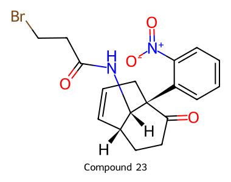
C18H19BrN2O4 · source_drawing_transcription
depicted_configuration_transcribed
O=C(CCBr)N[C@H]1[C@H]2C=CC[C@]1(c1ccccc1[N+](=O)[O-])C(=O)CC2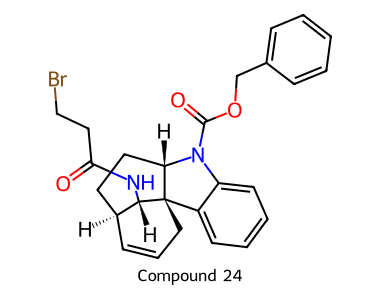
C26H27BrN2O3 · source_drawing_transcription
depicted_configuration_transcribed
O=C(CCBr)N[C@H]1[C@H]2C=CC[C@@]13c1ccccc1N(C(=O)OCc1ccccc1)[C@H]3CC2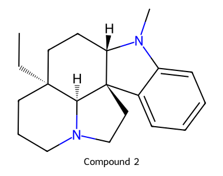
C20H28N2 · source_drawing_transcription
depicted_configuration_transcribed
CC[C@]12CCCN3CC[C@@]4(c5ccccc5N(C)[C@H]4CC1)[C@@H]32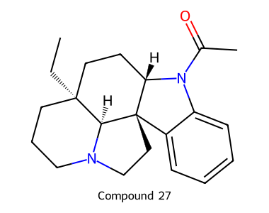
C21H28N2O · source_drawing_transcription
depicted_configuration_transcribed
CC[C@]12CCCN3CC[C@@]4(c5ccccc5N(C(C)=O)[C@H]4CC1)[C@@H]32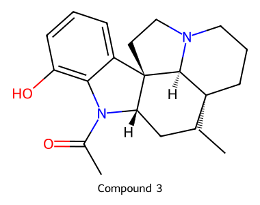
C21H28N2O2 · source_drawing_transcription
depicted_configuration_transcribed
CC[C@]12CCCN3CC[C@@]4(c5cccc(O)c5N(C(C)=O)[C@H]4CC1)[C@@H]32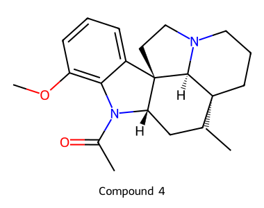
C22H30N2O2 · source_drawing_transcription
depicted_configuration_transcribed
CC[C@]12CCCN3CC[C@@]4(c5cccc(OC)c5N(C(C)=O)[C@H]4CC1)[C@@H]32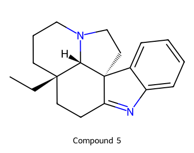
C19H24N2 · source_drawing_transcription
depicted_configuration_transcribed
CC[C@]12CCCN3CC[C@]4(C(=Nc5ccccc54)CC1)[C@@H]32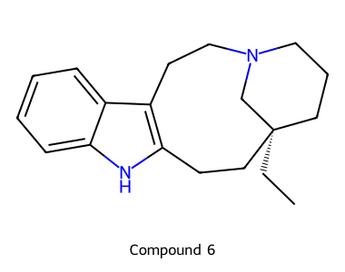
C19H26N2 · source_drawing_transcription
depicted_configuration_transcribed
CC[C@]12CCCN(CCc3c([nH]c4ccccc34)CC1)C2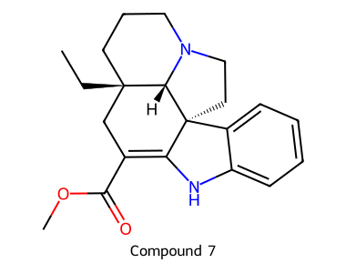
C21H26N2O2 · source_drawing_transcription
depicted_configuration_transcribed
CC[C@]12CCCN3CC[C@]4(C(=C(C(=O)OC)C1)Nc1ccccc14)[C@@H]32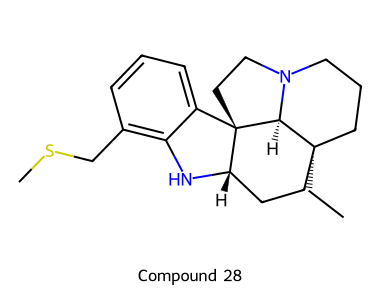
C21H30N2S · source_drawing_transcription
depicted_configuration_transcribed
CC[C@]12CCCN3CC[C@@]4(c5cccc(CSC)c5N[C@H]4CC1)[C@@H]32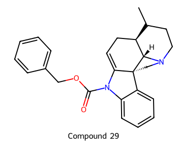
C27H30N2O2 · source_drawing_transcription
depicted_configuration_transcribed
CC[C@@]12CC=C3N(C(=O)OCc4ccccc4)c4ccccc4[C@@]34CCN(CCC1)[C@@H]24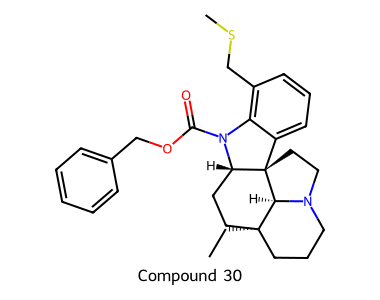
C29H36N2O2S · source_drawing_transcription
depicted_configuration_transcribed
CC[C@]12CCCN3CC[C@@]4(c5cccc(CSC)c5N(C(=O)OCc5ccccc5)[C@H]4CC1)[C@@H]32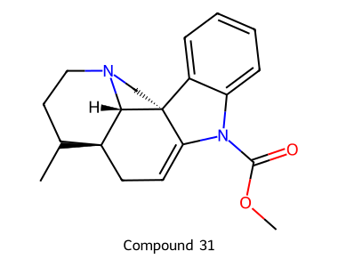
C21H26N2O2 · source_drawing_transcription
depicted_configuration_transcribed
CC[C@@]12CC=C3N(C(=O)OC)c4ccccc4[C@@]34CCN(CCC1)[C@@H]24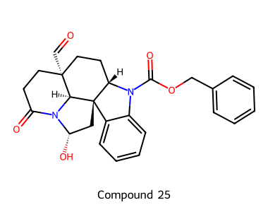
C26H26N2O5 · source_drawing_transcription
depicted_configuration_transcribed
O=C[C@]12CCC(=O)N3[C@@H](O)C[C@@]4(c5ccccc5N(C(=O)OCc5ccccc5)[C@H]4CC1)[C@@H]32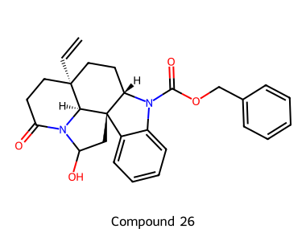
C27H28N2O4 · source_drawing_transcription
source_unspecified_or_mixed
C=C[C@]12CCC(=O)N3C(O)C[C@@]4(c5ccccc5N(C(=O)OCc5ccccc5)[C@H]4CC1)[C@@H]32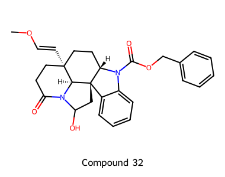
C28H30N2O5 · source_drawing_transcription
source_unspecified_or_mixed
CO/C=C/[C@]12CCC(=O)N3C(O)C[C@@]4(c5ccccc5N(C(=O)OCc5ccccc5)[C@H]4CC1)[C@@H]32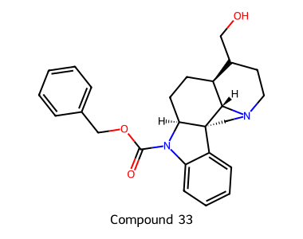
C27H32N2O3 · source_drawing_transcription
depicted_configuration_transcribed
O=C(OCc1ccccc1)N1c2ccccc2[C@@]23CCN4CCC[C@@](CCO)(CC[C@H]12)[C@H]43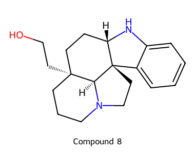
C19H26N2O · source_drawing_transcription
depicted_configuration_transcribed
OCC[C@]12CCCN3CC[C@@]4(c5ccccc5N[C@H]4CC1)[C@@H]32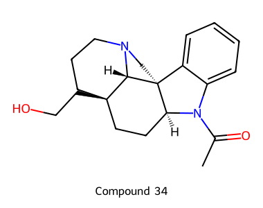
C21H28N2O2 · source_drawing_transcription
depicted_configuration_transcribed
CC(=O)N1c2ccccc2[C@@]23CCN4CCC[C@@](CCO)(CC[C@H]12)[C@H]43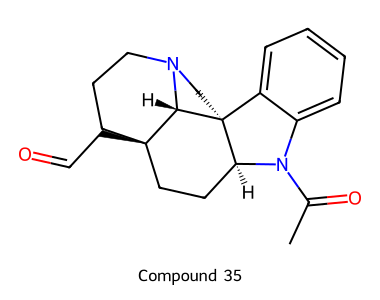
C21H26N2O2 · source_drawing_transcription
depicted_configuration_transcribed
CC(=O)N1c2ccccc2[C@@]23CCN4CCC[C@@](CC=O)(CC[C@H]12)[C@H]43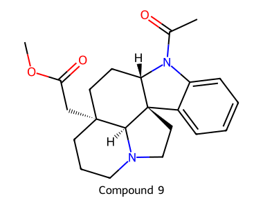
C22H28N2O3 · source_drawing_transcription
depicted_configuration_transcribed
COC(=O)C[C@]12CCCN3CC[C@@]4(c5ccccc5N(C(C)=O)[C@H]4CC1)[C@@H]32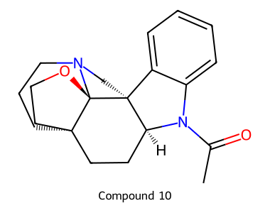
C21H26N2O2 · source_drawing_transcription
depicted_configuration_transcribed
CC(=O)N1c2ccccc2[C@]23CCN4CCC[C@@]5(CCO[C@]452)CC[C@H]13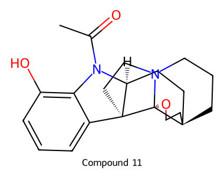
C21H26N2O3 · source_drawing_transcription
depicted_configuration_transcribed
CC(=O)N1c2c(O)cccc2[C@]23CCN4CCC[C@@]5(CCO[C@]452)CC[C@H]13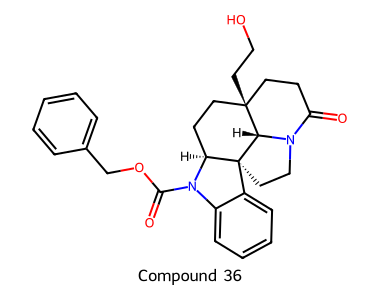
C27H30N2O4 · source_drawing_transcription
depicted_configuration_transcribed
O=C1CC[C@@]2(CCO)CC[C@@H]3N(C(=O)OCc4ccccc4)c4ccccc4[C@@]34CCN1[C@@H]24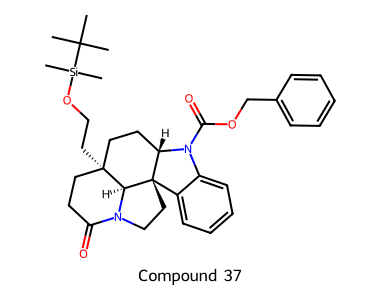
C33H44N2O4Si · source_drawing_transcription
depicted_configuration_transcribed
CC(C)(C)[Si](C)(C)OCC[C@]12CCC(=O)N3CC[C@@]4(c5ccccc5N(C(=O)OCc5ccccc5)[C@H]4CC1)[C@@H]32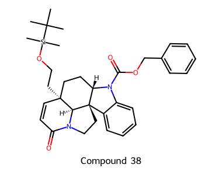
C33H42N2O4Si · source_drawing_transcription
depicted_configuration_transcribed
CC(C)(C)[Si](C)(C)OCC[C@]12C=CC(=O)N3CC[C@@]4(c5ccccc5N(C(=O)OCc5ccccc5)[C@H]4CC1)[C@@H]32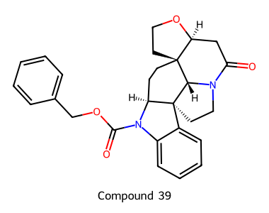
C27H28N2O4 · source_drawing_transcription
depicted_configuration_transcribed
O=C1C[C@@H]2OCC[C@@]23CC[C@@H]2N(C(=O)OCc4ccccc4)c4ccccc4[C@@]24CCN1[C@@H]34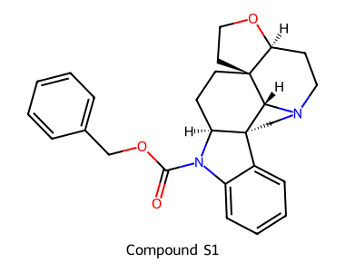
C27H30N2O3 · source_drawing_transcription
depicted_configuration_transcribed
O=C(OCc1ccccc1)N1c2ccccc2[C@@]23CCN4CC[C@@H]5OCC[C@]5(CC[C@H]12)[C@H]43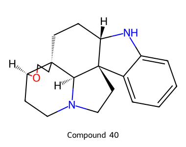
C19H24N2O · source_drawing_transcription
depicted_configuration_transcribed
c1ccc2c(c1)N[C@H]1CC[C@]34CCO[C@H]3CCN3CC[C@]21[C@@H]34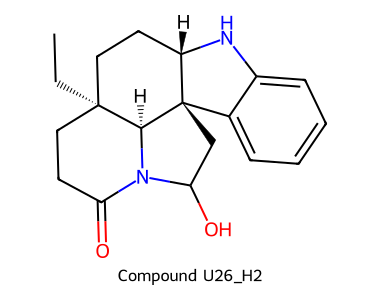
C19H24N2O2 · procedural_interpretation
source_unspecified_or_mixed
CC[C@]12CCC(=O)N3C(O)C[C@@]4(c5ccccc5N[C@H]4CC1)[C@@H]32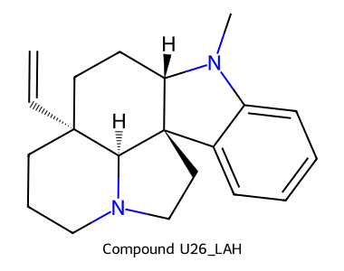
C20H26N2 · procedural_interpretation
depicted_configuration_transcribed
C=C[C@]12CCCN3CC[C@@]4(c5ccccc5N(C)[C@H]4CC1)[C@@H]32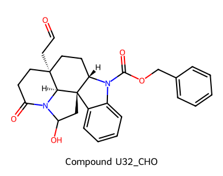
C27H28N2O5 · procedural_interpretation
source_unspecified_or_mixed
O=CC[C@]12CCC(=O)N3C(O)C[C@@]4(c5ccccc5N(C(=O)OCc5ccccc5)[C@H]4CC1)[C@@H]32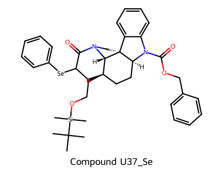
C39H48N2O4SeSi · procedural_interpretation
source_unspecified_or_mixed
CC(C)(C)[Si](C)(C)OCC[C@@]12CC[C@@H]3N(C(=O)OCc4ccccc4)c4ccccc4[C@@]34CCN(C(=O)C([Se]c3ccccc3)C1)[C@@H]24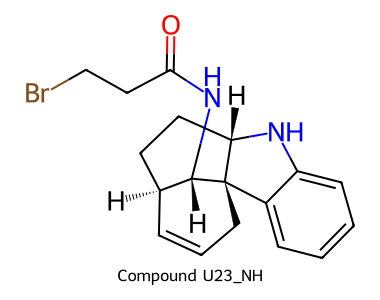
C18H21BrN2O · procedural_interpretation
depicted_configuration_transcribed
O=C(CCBr)N[C@H]1[C@H]2C=CC[C@@]13c1ccccc1N[C@H]3CC2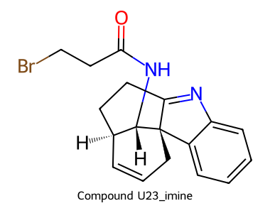
C18H19BrN2O · procedural_interpretation
depicted_configuration_transcribed
O=C(CCBr)N[C@H]1[C@H]2C=CC[C@]13C(=Nc1ccccc13)CC2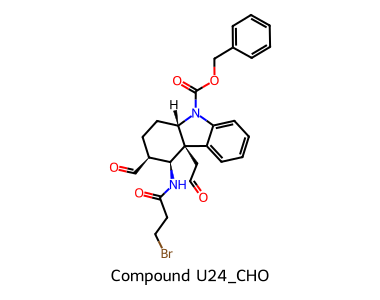
C26H27BrN2O5 · procedural_interpretation
depicted_configuration_transcribed
O=CC[C@]12c3ccccc3N(C(=O)OCc3ccccc3)[C@H]1CC[C@H](C=O)[C@@H]2NC(=O)CCBr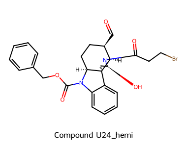
C26H27BrN2O5 · procedural_interpretation
depicted_configuration_transcribed
O=C[C@@H]1CC[C@@H]2N(C(=O)OCc3ccccc3)c3ccccc3[C@@]23C[C@H](O)N(C(=O)CCBr)[C@@H]13Schema design reference: Open Reaction Database. This export uses an Atlas-specific schema, not ORD submission certification.